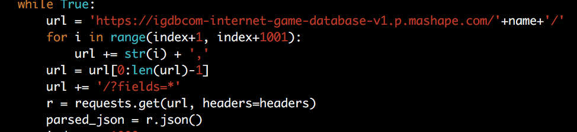
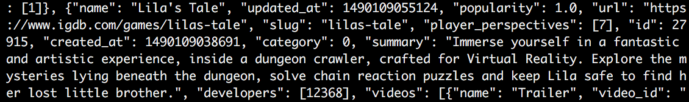
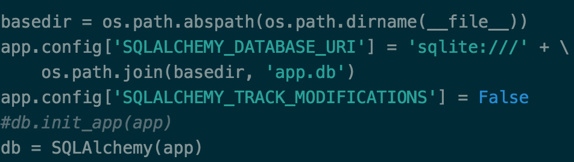
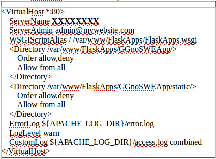

The Video Game industry is one of largest and fastest growing entertainment industries today. In recent history, video games have managed to reach comparable revenue numbers to movies, music and other forms of entertainment. In 2014, the video game industry earned approximately six times the amount of revenue that the music industry did, while growing to earn almost a third of the revenue of the film industry, and these numbers are still increasing! The allure of this growing market has spawned a multitude of game studios in the last 40 years, from massive multimedia powerhouses like EA or Activision to the smallest indie hopefuls. And all of them are constantly producing new content, with the industry cranking out over a thousand new games per year.
All of this information can easily get very chaotic, and it becomes increasingly hard to search for titles you may like on a platform you own. Our goal at ggnoswe.me is to design a website which clearly allows you to view information and reviews about games as well as their developers and platforms. With this tool, a user will be able to browse our website and get a good understanding of what the best games for a particular platform are, what games a studio has developed, and what games they may like based on ratings and reviews.
There are several scenarios where this could prove useful. If a user was trying to get into “The Legend of Zelda” for the first time they could simply search for that name and easily figure out which game(s) from the series they wanted to start with based on ratings and reviews, and what platforms they have access to.
Another example user might like “Final Fantasy” as a series, but want to find something else by the same studio with a similar feel on a different platform since that series is mainly restricted to Playstation. As before they could simply navigate to a game in the series and go to the studio.
From here they can see a list of published games and look through them to see if any match what they want. For example, if they were looking for 3DS games they may be directed to titles like “Bravely Default” or “Dragonquest” which are more readily available on Nintendo platforms but developed by the same Studio with the same general aesthetic.
Overall this website aims to be a tool which makes information gathering about video games easier users so they can make more effective decisions on choosing what games to play.
Design
Apiary API:
The API we designed through apiary works in a similar fashion for each model. For instance the games model has two different calls that can be made to the API: List All Games and List Specific Game. A user of the API can call list all games that will return to them a list of JSONs that contain two keys id and name that users may store on their own machines.
Fig1. - Example of List all games JSON.
With this information the user is now able to make a call to the List Specific Game API call using the value of id. This call will return to a single JSON that contains the information for game such as id, name, summary, genre, rating, ect.
Fig2. - Example of JSON for a specific game.
This process remains the same for Platform, Studio as well as Reviews allowing the user to find information for the specific topic they want in each model rather than sending them all of the information in the database.
IGDB API Calls:
The API we are accessing through igdb.com returned a list of JSONs that contains the many attributes of a game such as name, created_at and url. It also comes with information such as hypes and time_to_beat which are not necessary for our project and will be filtered out before we put it into our database. We are currently scraping the api by first creating a header dictionary that contains our api key that will later be used in the url of the api request. Then we continuously loop in order to pull all of the info from the api and break when we receive multiple error codes indicating the end to exit the loop.
Fig3. - Conditions for leaving the loop.
Inside of the loop in order speed up the process we concatenate our current index into the dataset with all entries up to index+1000 separated by a comma.
Fig4. - Speeding up API requests by altering URL.
This allows for a single call to return multiple JSONs with a single api call. From there we parse the JSONs so that they may be added to the output list.
Tools
Front-End:
The front-end technologies we will be using include CSS, Bootstrap, HTML, Javascript and ReactJS. Cascading style sheets are used to cleanly handle formatting, placement, and fonts. Bootstrap is a front end framework used to make pages dynamic and responsive. It makes organization easier. Javascript is a front end language used to do logic in the front end such as handle user inputs and trigger events. ReactJS is a JavaScript library that gives the ability to create very dynamic, interactive webpages that give a great user experience. It will be used for sorting, filtering, routing and used for its ability to dynamically change the DOM in our html. Another tool that was used was Bootstrap, a css and javascript component that was used to make our website look presentable. The tool used to embed the company image and game image is simple css and bootstrap css that makes the image responsive and change the size of the image to fit into the div correctly and nicely.
Back-End:
For the backend of our application, we focused mainly on using the tools Flask paired with Jinja2 for rendering and SQLAlchemy for populating our grids and model instances with data. While it was only necessary to populate 3 instances (rows) for each models, we decided to scrape data from the API we’re using (https://igdb.github.io/api/) and populated a local database using SQLAlchemy. Doing so allowed us to easily access the data and create dynamically linked pages with more information and embedded images along with creating paginations. We chose this route over hard-coding and parsing made-up JSON files because we will eventually implement a database and doing so will save work in the long run.
Embedded Media Services
For our models, we embedded various pictures and logos that associate with the respective models. For instance, Game models had a picture of the game displayed if it exists, Platform models had a picture of the console if it exists and so on. These were implemented using html and the image tag, passing in the link to the image as the src. For videos of reviews and games if they existed, we used the iframe tag passing in the width and the desired lengths. For src, we passed in the link to the video if it existed.
Scraping Data:
In order to scrape the data, we first registered an API key with IGDB on http://igdb.github.io/api/. After following through their documentations, we learned the various options we had and the information each call would output. The four models we focused on were Game, Companies, Reviews and Platforms. We established these four as our primary models. We then created one general script trying to scrape data for each of our models. To accomplish this, we used the Python libraries requests, json and sys. Requests were used to connect to the API and gather the data and we save the data as a json file and we use sys to parse the various inputs that the script takes to populate a given model. Sample call is as shown in the figure:
In order to scrape the data, we first registered an API key with IGDB on http://igdb.github.io/api/. After following through their documentations, we learned the various options we had and the information each call would output. We then created one general script trying to scrape data for each of our models. To accomplish this, we used the Python libraries requests, JSON and sys. Requests were used to connect to the API and gather the data. From there, we saved the data as a JSON file and we used sys to parse the various inputs that the script takes to populate a given model. Sample call is as shown in the figure:

Fig 1. scraping data
In the JSON files we save, they contain the different information regarding the games, platforms, reviews and game companies as shown as follows:

Fig 2. JSON data
With this information, we were able to populate our database as described in the following sections.
Models:
A major part of ORM(object relational mapping) is models. In our application, we defined four models: game, platform, studio and reviews. In models.py, we created a model for each of our four classes and defined the attributes we wanted them to have. Since models.py works closely with SQLAlchemy, for each attribute of each model, we defined the expected type for the attribute. In cases in which there’s a one to many or many to one relationship, we employed the method db.relationship() with parameters backref and lazy=”dynamic” to set up the relationship so that we can access the respective model. Backref allows the objects to link to each other while lazy=”dynamic” allows us to display the query results when we render it in Jinja2. In other words, backref is a simple way to declare some new property of the class you’re linking a model to. Whereas lazy defines when SQLAlchemy will load the data from the database you create. Setting up the models.py allowed us to create objects for each model and be able to use data in a declarative way as we did in __init__.py. Having defined the relationships, it made it easier for us to get the attributes a certain object was connected it. We overwrote __init__ for each model and then we declared them as we made our objects. We used assertions throughout the init methods to make sure that the data being passed in are what we were expecting.
Database:
We used SQLAlchemy with our Flask application as a means of easily storing data and accessing them when needed. We first configured our application to use the local database in __init__.py as show below:

Fig 3. Initialize database
Then to initialize the database, we entered the Python interactive mode and created a session for the database and called “db.create_all()”. In order to populate our database as quickly and efficiently as possible, we created a script called populateDb.py that we used to parse the JSON files we scraped as detailed above and inserted the various object models into the database. For each model, we constructed the appropriate object and initialized the information and then added the object to our database using db.session.add(). Then we committed the change if no errors occurred.
__init__.py
__init__.py is the main file for our application. __init__.py is our file from which we run the application on the server. In it, we defined the different routes to the html/css files in templates and we configured basic information for our application such as the database path as shown:
Fig 4. Routing
For pagination and populating the pages with our data, we accessed the database for the respective model and rendered the template passing in the list of objects. To easily accomplish this, we employed a flask library called flask-paginate that handled most of the work for pagination. Then we altered our html files to employ Jinja2 as a way to dynamically generate the data and provide pages limited by the number of items we want for each page. While Jinja2 may be considered front-end, since it comes with Flask, the back-end developers used it to render the various pages and their elements.
For pagination and populating the pages with our data, we accessed the database for the respective model and rendered the template passing in the list of objects. To easily accomplish this, we employed a flask library called flask-paginate that handled most of the work for pagination. Then we altered our html files to employ Jinja2 as a way to dynamically generate the data and provide pages limited by the number of items we want for each page.
Hosting
To set up an AWS server that hosts a Flask application:
I. Create a Virtual Private Cloud (VPC)
Create an AWS account and log in to the console.
From the Services tab, select VPC. A Virtual Private Cloud (VPC) determines who gets to access your website.
Click Start VPC Wizard > VPC with a Single Public Subnet. Keep most of the defaults, but give a value to VPC name. Under Service Endpoints, click Add Endpoint. In the Subnet field, select Public Subnet. Create the VPC.
II. Create an EC2 instance
Once the VPC has been created, from the Services tab, select EC2. Under the Create Instance heading, click Launch Instance. Select the Free Tier Eligible Ubuntu Server.
Figure 1: Free Tier Eligible Ubuntu Server
For the Instance Type, select the General Purpose, Free Tier Eligible instance type. Click Next.
On Step 3: Configure Instance Details, change Auto-assign Public IP to Enable.
In the EC2 configuration settings, skip to Step 7: Review Instance Launch. Under the Security Groups heading, click Edit security groups > Add Rule > Type: HTTP > Source: Anywhere. Then click Review and Launch.
Figure 2: Review Instance Launch Settings
When you launch your instance, you will need to create a new key/pair. Give it a name, and download the key/pair file. Make sure you know where you downloaded the file; you will need it to SSH into your Linux box.
To connect to your instance, select it from the EC2 Management page and click Connect. The following message will pop up. Follow the instructions and you’ll be able to connect to your instance.
Figure 3: Instructions to access your EC2 instance
Once you’ve connected to your Linux box, your terminal should look like this:
Figure 4: Connecting to an EC2 instance
III. Installing Apache on the EC2 Instance
In order to correctly host a Flask application on your EC2 instance, you need web server software, which is where Apache comes in. To install Apache run the following commands in your terminal:
sudo apt-get install apache2
sudo apt-get update
sudo apt-get install libapache2-mod-wsgi
To verify that Apache has been installed correctly, enter the IP Address of your EC2 instance in a web browser. To find the IP Address, click on your instance in the EC2 Management Console and copy the value given as the IPv4 Public IP. You should see a page like this in your web browser:
Figure 5: Sample Ubuntu Default Page
IV. Installing and Deploying the Flask Application
Once you’ve verified that Apache has been correctly installed, install Flask with the following commands: sudo apt-get install python-flask
sudo apt-get upgrade
n the /var/www directory, create the following project structure:
Figure 7
NOTE: From here on, replace any instances of GGnoSWE with the desired name of your application.
GnoSWEApp is where your Flask application code should live. Copy any Flask application code from your local machine to this directory.
Install any libraries/modules that your application needs on the server. For example, sudo apt-get install python-pip
sudo pip install Flask-SQLAlchemy
V. Configuring Apache to point to your Flask Application
Create a file in /etc/apache2/sites-available/ named GGnoSWEApp.conf with the following contents, replacing XXXXXXXX with the IP Address of your EC2 instance and the ServerAdmin’s e-mail with your email:

Figure 8
Run the following commands to configure/restart Apache: sudo a2enmod wsgi
sudo apachectl restart
sudo a2ensite GGnoSWEApp
service apache2 reload
sudo /etc/init.d/apache2 reload
To tell Apache how to run Flask, create a file named FlaskApps.wsgi in the /var/www/FlaskApps/ directory and enter the following code, replacing home with the name of the Python file that runs your Flask application: #! /usr/bin/python
import sys
import logging
logging.basicConfig(stream=sys.stderr)
sys.path.insert(0,"/var/www/FlaskApps/GGnoSWEApp/")
# home points to the home.py file
from home import app as application
application.secret_key = "somesecretsessionkey"
Restart the Apache server with the following 2 commands:
sudo service apache2 restart
sudo /etc/init.d/apache2 reload
Type the IP Address of your EC2 instance in your web browser again and you should be able to see your Flask application on the Internet! As an example:
Figure 9: Example of a deployed Flask application
Every time you make changes to the Flask application on your server, remember to restart Apache afterwards. Simply run the following command after each change:
sudo service apache2 restart
You have now deployed your Flask application on an EC2 instance with the help of an Apache web server.